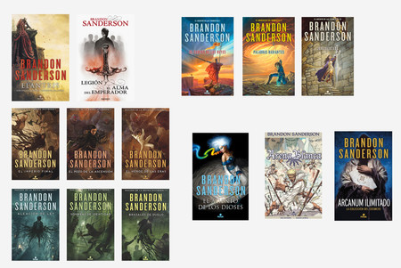
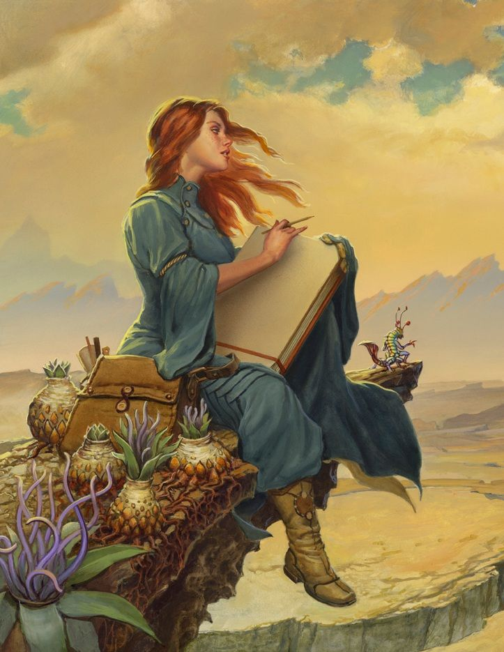
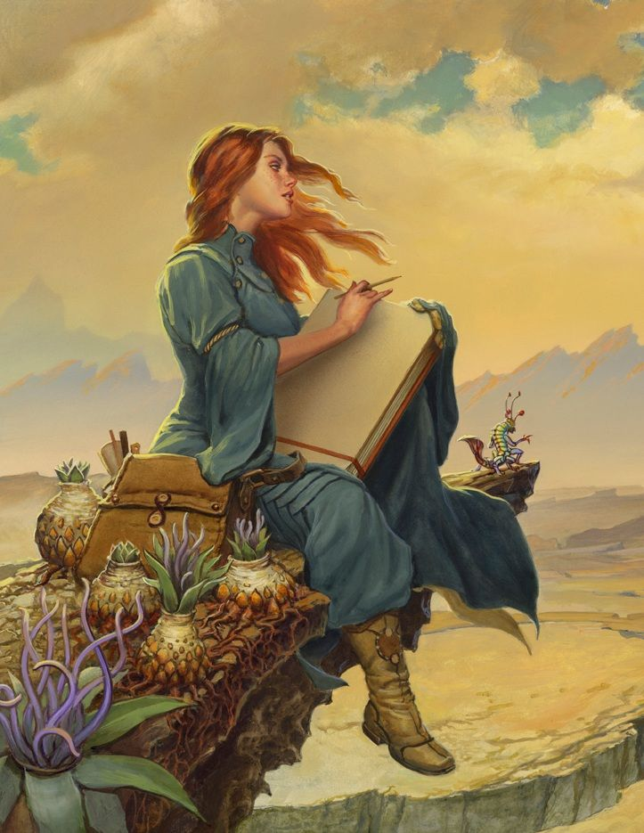

Libros del Cosmere
Saga Elantris
Elantris
La ciudad de Elantris, poderosa y bella capital de Arelon, había sido llamada la «ciudad de los dioses ». Antaño famosa sede de inmortales, un lugar repleto de poder y magia, Elantris ha caído en desgracia. Ahora sólo acoge a los nuevos «muertos en vida» postrados en una insufrible «no-vida» tras una misteriosa y terrible «transformación». En un único volumen, una maravillosa historia de la moderna fantasía en que la política, el amor y, también, la religión desempeñan un papel extraordinario.

El Alma del Emperador
El alma del emperador narra como Shai, una falsificadora de entes o elementos es recluida tras pillarla en el robo del cetro imperial, para realizar una reconstrucción de la mente del emperador; el cual ha sufrido un atentado por una facción rival, tarea que lleva a cabo a lo largo de 101 días.
El Archivo de las Tormentas
El Camino de los Reyes
Anhelo los días previos a la Última Desolación. Los días en que los Heraldos nos abandonaron y los Caballeros Radiantes se giraron en nuestra contra. Un tiempo en que aún había magia en el mundo y honor en el corazón de los hombres. El mundo fue nuestro, pero lo perdimos. Probablemente no hay nada más estimulante para las almas de los hombres que la victoria. ¿O tal vez fue la victoria una ilusión durante todo ese tiempo? ¿Comprendieron nuestros enemigos que cuanto más duramente luchaban, más resistíamos nosotros? Quizá vieron que el fuego y el martillo tan solo producían mejores espadas. Pero ignoraron el acero durante el tiempo suficiente para oxidarse. Hay cuatro personas a las que observamos. La primera es el médico, quien dejó de curar para convertirse en soldado durante la guerra más brutal de nuestro tiempo. La segunda es el asesino, un homicida que llora siempre que mata. La tercera es la mentirosa, una joven que viste un manto de erudita sobre un corazón de ladrona. Por último está el alto príncipe, un guerrero que mira al pasado mientras languidece su sed de guerra. El mundo puede cambiar.

Palabras Radiantes
Los Caballeros Radiantes deben volver a alzarse. Los antiguos juramentos por fin se han pronunciado. Los hombres buscan lo que se perdió. Temo que la búsqueda los destruya. Es la naturaleza de la magia. Un alma rota tiene grietas donde puede colarse algo más. Las potencias, los poderes de la creación misma, pueden abrazar un alma rota, pero tambien pueden ampliar sus fisuras. El Corredor del Viento está perdido en una tierra quebrada, en equilibro entre la venganza y el honor. La Tejedora de Luz, lentamente consumida por su pasado, busca la mentira en la que debe convertirse. El Forjador de Vínculos, nacido en la sangre y la muerte, se esfuerza ahora por reconstruir lo que fue destruido. La Exploradora, a caballo entre los destinos de dos pueblos, se ve obligada a elegir entre una muerte lenta y una terrible traición a todo en lo que cree.
 

Juramentada
La humanidad se enfrenta a una nueva Desolación con el regreso de los Portadores del Vacío, un enemigo tan grande en número como en sed de venganza. La victoria fugaz de los ejércitos alezi de Dalinar Kholin ha tenido consecuencias: el enemigo parshendi ha convocado la violenta tormenta eterna, que arrasa el mundo y hace que los hasta ahora pacíficos parshmenios descubran con horror que llevan un milenio esclavizados por los humanos. Al mismo tiempo, en una desesperada huida para alertar a su familia de la amenaza, Kaladin se pregunta si la repentina ira de los parshmenios está justificada.
Ritmos de guerra
Tras forjar una coalición de resistencia humana contra la invasión enemiga, Dalinar Kholin y sus Caballeros Radiantes llevan un año librando una guerra prolongada y brutal. Ningún bando ha logrado obtener ventaja. Mientras los nuevos descubrimientos tecnológicos cambian el trasfondo de la contienda, el enemigo prepara una operación audaz y peligrosa. La carrera armamentística resultante desafiará el mismo núcleo de los ideales Radiantes y quizá revele los secretos de la antiquísima torre en la que una vez residió toda su fuerza.
Primera trilogía Nacidos de la Bruma
El imperio final
Durante mil años han caído las cenizas y nada florece. Durante mil años los skaa han sido esclavizados y viven sumidos en un miedo inevitable. Durante mil años el Lord Legislador reina con un poder absoluto gracias al terror, a sus poderes e inmortalidad. Le ayudan «obligadores» e «inquisidores», junto a la poderosa magia de la «alomancia». Pero los nobles a menudo han tenido trato sexual con jóvenes skaa y, aunque la ley lo prohíbe, algunos de sus bastardos han sobrevivido y heredado los poderes alománticos: son los «nacidos de la bruma» (mistborns). Ahora, Kelsier, el «superviviente», el único que ha logrado huir de los Pozos de Hathsin, ha encontrado a Vin, una pobre chica skaa con mucha suerte... Tal vez los dos, unidos a la rebelión que los skaa intentan desde hace mil años, logren cambiar el mundo y la atroz dominación del Lord Legislador.
El pozo de la ascensión
Durante mil años nada ha cambiado: han caído las cenizas, los skaa han sido esclavizados y el Lord Legislador ha dominado el mundo. Pero lo imposible ha sucedido. El Lord Legislador ha muerto. Sin embargo, vencer y matarlo fue la parte sencilla. El verdadero desafío será sobrevivir a las consecuencias de su caída. Tomar el poder tal vez resultó fácil, pero ¿qué ocurre después?, ¿cómo se utiliza? La tarea de reconstruir el mundo, ahora que Kelsier no está, ha quedado en manos de Vin. Y las brumas, desde que el Lord Legislador cayó, se han vuelto cada vez más impredecibles... A medida que el asedio se intensifica, la antigua leyenda del Pozo de la Ascensión ofrece un único rayo de esperanza. En ese mundo de aventura épica, la estrategia política y religiosa debe lidiar con los siempre misteriosos poderes de la alomancia.
El héroe de las eras
Durante mil años nada ha cambiado: han caído las cenizas, los skaa han sido esclavizados y el Lord Legislador ha dominado el mundo. Kelsier, el «superviviente», el único que ha logrado huir de los Pozos de Hathsin, junto a Vin, una pobre chica skaa, se une a la rebelión. Y por fin lo imposible sucede: por fin la revolución ha triunfado. Pero acabar con el Lord Legislador es la parte sencilla. El verdadero desafío consistirá en sobrevivir a las consecuencias de su caída... sin Kelsier. Vin y el Rey Elend buscan en los últimos escondites de recursos del Lord Legislador y, engañado, el Rey libera del Pozo de la Ascensión algo que debería haber quedado oculto para siempre. Un enorme peligro acecha a la humanidad, y la verdadera pregunta es si conseguirán detenerlo a tiempo.
Segunda trilogía Nacidos de la Bruma
Aleación de Ley
Han pasado trescientos años desde los acontecimientos narrados en la primera trilogía de la saga, y Scadrial se encuentra ahora cerca de la modernidad: ferrocarriles, canales, iluminación eléctrica y los primeros rascacielos invaden el planeta. Aunque la ciencia y la tecnología están alcanzando nuevos retos, la antigua magia de la alomancia continúa desempeñando un papel fundamental. En una zona conocida como los Áridos, existen herramientas cruciales para aquellos hombres y mujeres que intentan establecer el orden y la justicia. Uno de estos hombres es Lord Waxillium Ladrian, experto en metales y en el uso de la alomancia y la feruquimia. Después de vivir veinte años en los Áridos, Wax se ha visto obligado, por una tragedia familiar, a volver a la metrópolis de Elendel. Sin embargo, y a su pesar, deberá guardar las armas y asumir las obligaciones que exige el hecho de estar rodeado de la clase noble. O al menos eso cree, ya que aún no sabe que las mansiones y las elegantes cal...
Sombras de identidad
La sociedad de Nacidos de la Bruma ha evolucionado en una fusión de magia y tecnología en la que la economía se expande, la democracia se enfrenta a la corrupción y la religión se convierte en una potencia cultural cada vez más influyente, con cuatro fes distintas enfrentadas por la captación de conversos. Esta sociedad tan animada y optimista, aunque todavía tambaleante, se enfrenta ahora a su primera amenaza de terrorismo, crímenes cuyo objetivo es fomentar el descontento de la clase trabajadora y avivar las llamas de los conflictos religiosos. Wax y Wayne, con la asistencia de la adorable y brillante Marasi, deberán dar al traste con la conspiración antes de que las revueltas civiles frenen por completo el progreso de Scadrial.
Brazales de Duelo
La cuenca de Elendel es un polvorín. El descontento de los trabajadores se suma a las diferencias irreconciliables entre la capital y las demás ciudades de la cuenca; Elendel asegura gobernarlas mientras sus habitantes denuncian la opresión a la que se sienten sometidos. De pronto, llega a oídos de Waxillium Ladrian que un académico kandra podría haber localizado los legendarios Brazales de Duelo, un arma capaz de sembrar la destrucción y dar al traste con el actual equilibrio de poder imperante en la cuenca.
Libros sueltos
El Aliento de los Dioses
Hace años, el monarca de Idris firmó un tratado con el reino de Hallandren según el cual el rey Dedelin enviaría a su hija mayor, Vivenna, para casarse con Susebron, el rey-dios de Hallabdren. Vivenna ha sido adiestrada durante toda su vida para ser una novia adecuada para Susebron y así cumplir con su deber y ayudar a forjar una paz estable entre los dos reinos. Ese era el plan, pero el monarca de Idris envía a su hija Siri, desobediente e independiente, en lugar de Vivenna.
Arena Blanca
En el planeta Taldain, los legendarios maestros de arena poseen poderes arcanos que les confieren un control espectacular sobre el elemento del que toman su nombre. Pero cuando una siniestra conspiración se salda con su desaparición violenta, el más debil de ellos, Kenton, cree haber sido el único superviviente. Cercado por sus adversarios desde todos los frentes, Kenton forja una improbable alianza con Khriss, una misteriosa "ladoscura" que oculta sus propios secretos...
Arcanum Ilimitado
este espectacular volumen recopila, por primera vez, nueve relatos y novelas cortas representativos de cada uno de esos mundos, con sus distintos sistemas de magia. La colección del Cosmere abarca los límites conocidos del universo de Sanderson (incluida una novela corta inédita de El Archivo de las Tormentas,Bailarina del Filo), así como ilustraciones, notas... y secretos.